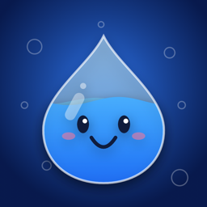

Sipling is a water reminder for Apple Watch. A little animated buddy fills up as you drink and gets thirsty when you fall behind. No iPhone app needed.
Free: a nudge every two hours while you are awake. Sipling Pro: smart reminders that re-plan after every drink and stop once you reach your goal. Set your wake-up and bedtime in Settings so you are never nudged at night. If reminders don’t arrive, check Settings › Notifications › Sipling on your watch (or the Watch app on iPhone).
Touch and hold the watch face › Edit › Complications and pick Sipling. Your buddy’s mood on the face follows your pace through the day.
Drinks are saved to Health as Water. With Sipling Pro and Workout boost on, Sipling reads your exercise minutes and raises today’s goal after a workout. Manage access in Settings › Health › Apps on your watch or iPhone.
Pro unlocks eight more buddies, smart reminders, workout boost and every drink type. The yearly plan starts with a 7-day free trial; cancel any time before it ends and you won’t be charged. Manage or cancel in Settings › your name › Subscriptions on your iPhone. Changed watches? Open Settings in Sipling and tap Restore purchases.
Email worldlampapps@gmail.com. We usually reply within two days.
Sipling is a wellness aid, not medical advice. If you have a condition that affects how much you should drink, follow your doctor’s guidance.